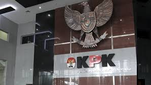

Sempat Mangkir, 2 Anggota DPR Kembali Dipanggil KPK di Kasus CSR BI

Jakarta, News.id -- Komisi Pemberantasan Korupsi (KPK) memanggil Wakil Ketua Komisi XI DPR Fraksi NasDem Fauzi Amro dan Anggota Komisi XI DPR Charles Meikyansah pada Rabu (30/4).
Keduanya sempat tidak hadir pada panggilan pertama 13 Maret lalu.
"Pemeriksaan dilakukan di Gedung Merah Putih KPK atas nama FA dan CM," ujar Juru Bicara KPK Tessa Mahardhika Sugiarto melalui keterangan tertulis, Rabu (30/4).
Fauzi dan Charles akan diperiksa sebagai saksi dalam kasus dugaan korupsi penyalahgunaan dana Corporate Social Responsibility (CSR) dari Bank Indonesia (BI).
Belum diketahui peran Fauzi Amro dan Charles dalam kasus ini sehingga harus dilakukan pemeriksaan. Keduanya pun hingga siang ini belum terlihat di Kantor KPK.
Dalam proses penyidikan berjalan, penyidik KPK sudah lebih dulu memeriksa Anggota Komisi XI DPR Fraksi NasDem Satori.
KPK menemukan dugaan penyimpangan yang disinyalir dilakukan Satori dalam penggunaan dana CSR BI di Cirebon. Wilayah Cirebon merupakan daerah pemilihan Satori saat maju sebagai caleg DPR Pemilu 2024.
Tim penyidik KPK sebelumnya juga sudah menggeledah rumah kediaman Satori di Cirebon dan menyita barang bukti seperti dokumen diduga terkait dengan perkara.
Dalam pemeriksaannya yang pertama, Satori mengungkapkan seluruh rekan kerjanya di Komisi XI DPR menerima dana CSR BI yang ditampung dalam yayasan. KPK tengah mendalami pengakuan tersebut.
"Itu yang kita sedang dalami di penerima yang lain, karena berdasarkan keterangan saudara S, teman-teman sudah catat ya, seluruhnya juga dapat ya kan, seluruh anggota Komisi XI terima CSR itu," kata Direktur Penyidikan KPK Asep Guntur Rahayu, Selasa (21/1) lalu.
Penyidik KPK juga telah memeriksa anggota Komisi XI DPR Fraksi Gerindra Heri Gunawan. Rumah kediaman yang bersangkutan di Tangerang Selatan juga telah digeledah dan ditemukan sejumlah barang bukti diduga terkait perkara.
Selain itu, pada Senin malam hingga Selasa dini hari (16–17 Desember 2024), KPK menggeledah ruang kerja Gubernur BI Perry Warjiyo dan dua ruangan di Departemen Komunikasi. Penggeledahan berlangsung selama sekitar delapan jam.
Sejumlah barang bukti diduga terkait perkara seperti dokumen dan barang bukti elektronik (BBE) diamankan untuk dilakukan penyitaan. KPK juga telah menggeledah salah satu ruangan direktorat di Kantor Otoritas Jasa Keuangan (OJK).
BI dan OJK menyatakan akan kooperatif dan bekerja sama dengan KPK untuk membongkar kasus tersebut.